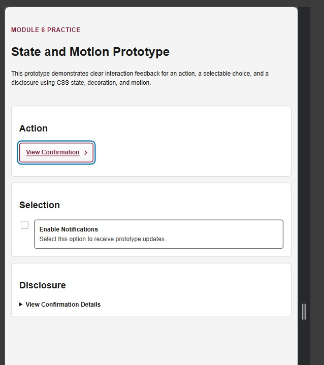
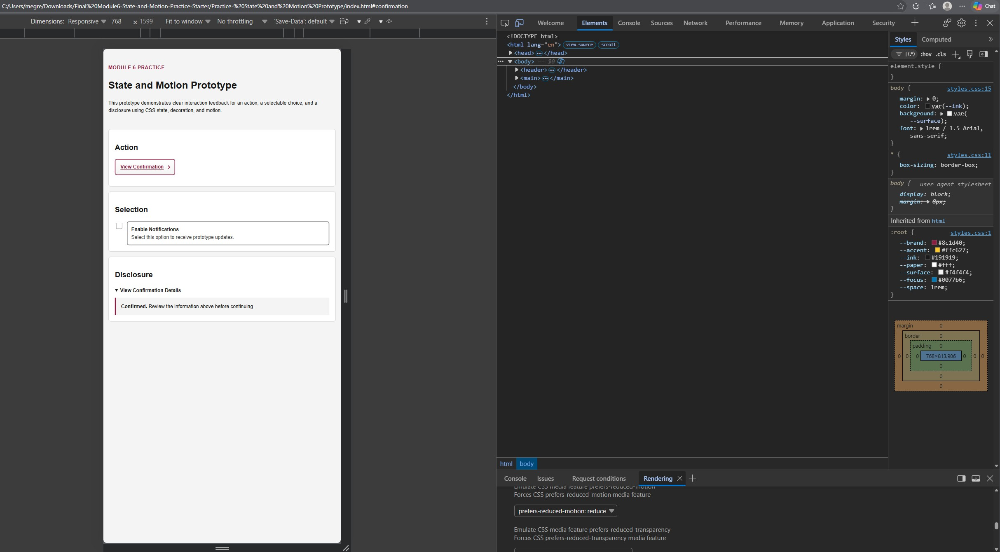

Prototype: State and Motion Prototype Browser/version: Microsoft Edge Version 154.0.4258.53 (Official build) (64-bit) Date: 10/6/2026
| Condition | Expected | Observed | Pass/Fail | Repair or next action |
|---|---|---|---|---|
| Keyboard operation and visible focus | All interactive controls should be reachable and operable using the keyboard, with a clearly visible focus indicator. | The action link, checkbox, and disclosure were reachable using the Tab key and could be operated with the keyboard. A visible focus outline appeared on the focused control. | Pass | No repair needed. |
| Pointer operation; no hover-only information | All controls should work with a pointer, and hover effects should provide supplemental feedback without hiding essential information. | The action link, checkbox, and disclosure were operable with the pointer. The action link changed appearance on hover, but its label and purpose remained visible before and after hovering. | Pass | No repair needed. |
| Reduced motion off versus on | Normal motion should provide a short finite disclosure animation, while reduced-motion preference should remove the animation and transitions without removing state feedback. | With reduced motion off, the confirmation used a short entrance animation. With reduced motion enabled, the disclosure appeared immediately without the animation, while the content, borders, and other state feedback remained visible. | Pass | No repair needed. Reduced-motion behavior preserved the same information without unnecessary movement. |
| 200% zoom and narrow viewport | Content and controls should remain readable and usable at 200% zoom and in a narrow viewport without clipping, overlap, or obscured focus indicators. | At 200% zoom and approximately 320px viewport width, the content reflowed without horizontal clipping or overlapping controls. Text remained readable and visible focus indicators were not obscured. | Pass | No repair needed. |
| Effects temporarily disabled | Labels, content, and state should remain understandable when decorative gradients and shadows are removed. | After temporarily disabling the gradient and box-shadow effects, all labels and content remained visible and understandable. The action retained its text, underline, border, and decorative arrow, while the selected checkbox state remained distinguishable through the checked control and thicker label border. The disclosure content also remained readable. | Pass | No repair needed. Decorative effects enhance the visual feedback but are not required to understand the controls or their states. |
| Legibility over affected surfaces | Text and control labels should remain clearly legible over gradients, shadows, and styled surfaces in every state. | Action text remained legible in both its default and hover states. Selection text and confirmation content also remained readable over their styled surfaces with no text obscured by effects. | Pass | No repair needed. |
| Performance recording: layout/paint/composition | The interaction effects should complete quickly without sustained or excessive rendering work. | The Performance recording showed brief clusters of rendering activity during the interactions. The activity was limited to the interaction periods, with no sustained rendering work visible across the recording. | Pass | No repair needed. The effects completed quickly and did not produce continuous rendering activity. |
Focus screenshot filename and what it proves: keyboard-focus.jpg - Shows a visible keyboard focus indicator on the View Confirmation link while navigating the prototype with the keyboard.

Reduced-motion screenshot filename and what it proves: reduce-motion.jpg - Shows the browser Rendering panel with prefers-reduced-motion: reduce enabled while the prototype remains visible and functional.

All required tests passed, so no additional repair was necessary. The strongest evidence came from the reduced-motion and Performance tests. With prefers-reduced-motion: reduce enabled, the disclosure animation and action transition
were removed while the same state information remained visible. The Performance recording also showed brief rendering activity limited to the interaction periods, with no sustained rendering work visible.